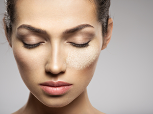
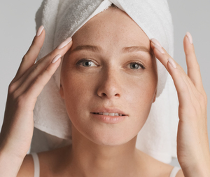
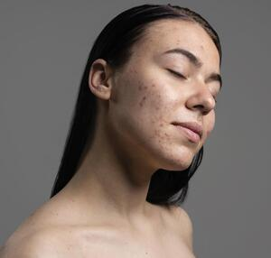

Piel seca
Presenta un aspecto rugoso al tacto, escamas blancas y sensacion de resequedad constante. Sigue estos pasos:
- Limpieza: Intenta utilizar limpiadores gentiles e hidratrantes, un maximo de 2 veces al dia
- Serum Hidratante: utiliza serums que protegan la barrera de la piel y eviten la perdida del agua.
- Crema Hidratante: Las Cremas con un vehiculo pesado seran tu mejor aliado
- protector solar

PIEL NORMAL O MIXTA
Las pieles normales tienden a volverse secas con el tiempo, pudiendo presentar líneas de expresión prematuras si no se cuida adecuadamente.Deberas escoger con cuidado tu limpiador, hidratante y protector solar.

Este tipo presenta acne, sebo constante, poros dilatados comedones y/o puntos negros. Lo mejor es usar limpiadores microexfoliantes, hidrtantes en forma de gel y un protector solar fluido